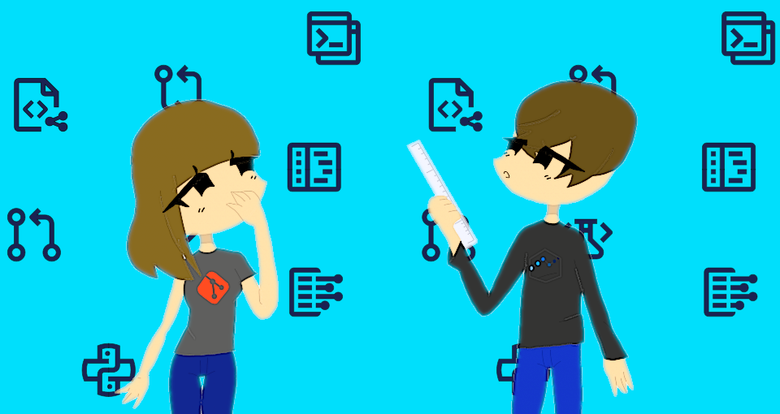

Git de 0 a 100 en diez sencillos pasos

¿Necesitas aprender Git para manejar con mayor eficiencia y control tus projectos y trabajos? Ya sea para desarrollo de software, creación de paginas web, investigaciones científicas, o para manejar tus escritos, te podría ser muy util aprovechar la seguridad que te da Git con su control de versiones, o la facilidad con la que te deja colaborar con tus colegas. Ademas, podría serte de mucha ayuda a la hora de buscar empleo en tu area de trabajo, ya que los proyectos y contribuciones que tengas subidos a Git te servirán como parte de tu curriculo. Sin embargo, puede parecerte algo intimidante debido a la gran diversidad de opciones que te proporciona, además del uso requerido de la línea de comandos en la aplicación Git. Pero si sigues los 10 pasos que presentamos a continuación, te darás cuenta de lo sencillo que puede resultar subir y manejar archivos en tu primer repositorio, crear varias ramas en el mismo y compartir archivos con colaboradores.
1. Creación de tu cuenta Github
Aunque es posible utilizar git a nivel local, es preferible que utilizes una plataforma que te permita alojar repositorios en la nube, tal como Github or Gitlab para difundir mas fácilmente tu trabajo. Podrás registrar una cuenta Github, donde simplemente tendrás que proporcionar tus datos y seguir los pasos de creación de cuenta. Tras registrarla, podrás seleccionar un plan de pago cuando quieras, o simplemente usarlo de forma gratuita.
2. Creación de tu primer repositorio
Inmediatamente después de crear tu primera cuenta, Github te guiará hacia la creación de tu primer repositorio, a través de https://github.com/new, donde tendrás que ponerle un nombre y una descripción. Github automáticamente crea el repositorio con un archivo README.md, el cual es un simple archivo de texto que será visto al entrar en la pagina del repositorio. Este archivo tiene información importante acerca del repositorio, el propósito de los archivos que están allí y de cómo está organizado el repositorio. También puedes aprovechar de colocar allí algún enlace a la página web del proyecto (si la tienes), o un correo para contactos e información.
3. Instalar Git en tu computadora
Para poder subir archivos a tu repositorio desde tu disco duro, tendrás que instalar Git en tu computadora. Simplemente descárgalo desde https://git-scm.com/, o, si estas usando Linux, instálalo mediante el gestor de paquetes de tu distribución buscando por el paquete git. Después podrás usarlo mediante la línea de comandos. Verífica si fue correctamente instalado ejecutando git –-help
4. Clonando un repositorio a tu computadora
Cuando creas un repositorio Git, automáticamente se crea una carpeta oculta .git la cual contiene información respecto a los archivos y ramas de tu repositorio, los cambios a éstos y el último commit del repositorio. Tu repositorio en Github también contiene esta carpeta, asi que, para ahorrarte un dolor de cabeza, deberías clonarlo (copiarlo en tu ordenador), ya sea descárgandolo desde su página o mediante la línea de comandos escribiendo: git clone https://github.com/(tu usuario)/(nombre del repositorio).git. También puedes copiar la URL del repositorio desde la página.
5. Agrega archivos a tu repositorio y haz tu primer commit
Cada vez que realizas cambios en tu repositorio (ya sea modificando, agregando o borrando archivos), deberás sincronizar el conjunto de cambios con tu repositorio, haciendo lo que se conoce como un commit. Puedes utilizar los comandos:
- git add {nombre de tu archivo}
- git rm {nombre de tu archivo}
para hacer cambios en la copia local de tu repositorio, ya sea añadir y modificar o quitar archivos, respectivamente. Antes de sincronizar los cambios, debes ‘empaquetarlos’ en un commit, mediante el comando git commit -m “{descripción de los cambios}”
Después podrás sincronizar ese commit con el servidor de Github utilizando el comando git push origin master Con aplicaciones gráficas como Github Desktop u otra similar, podrás realizar estos cambios de una forma mucho más intuitiva.
6. Maneja distintas ramas de tu repositorio
Cuando creas tu repositorio con git, sólo cuenta con la rama principal, o “default”, la cual se denomina master. En git la rama es una especie de ‘apuntador’ el cual señala hacia una serie especifica de commits. Cuando quieras hacer cambios en tus archivos, para realizar pruebas sin afectar el funcionamiento del código que ya sabes que funciona, puedes crear otra rama. Si los resultados son de tu agrado, podrás sincronizar ambas ramas más tarde. Para crear otra rama, simplemente ejecuta: git checkout -b {nombre de tu rama} Esto hará que, a partir de ahora, todos los cambios que realices a tus archivos sean parte de la rama que has creado. Si deseas sincronizar tu nueva rama con el servidor de Github, ejecutas: git push origin {nombre de tu rama} Igual que para hacer cambios en master, deberás hacer un commit para sincronizar los cambios locales con el repositorio de Github.
7. Realiza un merge
El comando git checkout nos permite cambiar de rama dentro del repositorio. Puedes usarlo para volver a hacer cambios en la rama master con el siguiente comando: git checkout master Si los cambios que has hecho en la rama te resultan de tu agrado, puedes hacer un merge, lo que quiere decir que se fusionan los cambios hechos en la rama secundaria con los de la rama en la que estas ubicado actualmente (en este caso, master). git merge {rama con cambios} Git intentará hacer este proceso automáticamente, pero puede ser que hayan conflictos entre ramas con los cambios hechos. En este caso, tendrás que editar los archivos que te muestra Git, y agregarlos manualmente con git add {nombre de archivo}
8. Verificar cambios con tu copia local
En caso de que tu copia local del repositorio no tenga los cambios hechos hasta el último commit en la rama que estás trabajando, puedes actualizarla con el comando git pull Si quieres ver que cambios han habido entre las distintas ramas del repositorio, puedes hacerlo con el comando git diff {rama fuente} {rama a comparar} También puedes ver la historia del repositorio (los commits hechos a lo largo del tiempo) usando el comando git log Recomendamos que primero ejecutes git log –help para ver como puedes aprovechar mejor esta herramienta.
9. Proponer cambios a los repositorios de los demás
En caso de que quieras hacer un commit a un repositorio que sea de otra persona, simplemente tendras que ir a la pagina del repositorio en Github, hacer un fork (una copia personal de ese repositorio, como un puente hacia el original), y clonarlo en tu computadora. Luego de crear los commit deseados, y subirlos a tu fork, podras dirigirte a la pagina en la que reside tu fork y darle click a ‘New pull request’ (o solicitud de extracción). Esto te llevara a una pagina donde puedes evaluar los cambios que has hecho y crear una solicitud para que los propietarios del repositorio los fusionen con la rama master del repositorio.
10. Aceptar o negar cambios propuestos
Cuando un colaborador siga los pasos descritos anteriormente y haga una solicitud de extracción, podrás verificar los cambios que se han realizado en el commit de su fork, ademas de ver la descripción de este y las sugerencias que han dado. Podrás entonces conversar con ellos en los comentarios de la solicitud de extracción, y dependiendo de lo que consideres apropiado, aceptar o negar los commit propuestos, y fusionar su fork con la rama master. En caso de que quieras que un colaborador pueda contribuir al proyecto sin necesidad de aprobar sus commit, podrás invitarlos mediante la pagina de Parámetros (accesible mediante la pagina del repositorio), simplemente dandole clic a Colaboradores en la barra lateral izquierda y añadiendo su nombre de usuario.
Si has seguido todos los pasos hasta ahora, felicidades, ya puedes considerarte oficialmente un usuario de git! Mantener y actualizar tus propios repositorios y colaborar con los demás usuarios de Github es mas sencillo de lo que parece. Si así lo deseas, puedes seguir buscando información acerca de como aprovechar git al maximo, ya sea a través del libro Pro Git, o documentación de Github.
Comentarios
Comments powered by Disqus